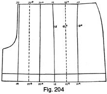

Early 1940's—Ladies' Garment Cutting and Making
by
F. R. Morris
Chapter XV—Trousers, Shorts, Plus-Fours, Ski-ing Trousers, and Riding Breeches
THE increased popularity of trousers arid shorts for sports, holiday, and general wear has focused much attention on these nether garments. In the lay Press many professed critics have given their views on the suitability or otherwise of bifurcated garments when worn by the feminine figure. In the majority of comments, emphasis has been laid on the rather untidy appearance presented at the back of these garments over the hips in comparison with a well-cut skirt. Now there is a reason for this criticism, and it is justified by the majority of the garments seen. The suggestion of untidiness which has called forth unfavourable comment is the fault of the cutter, and the cutter alone. This may seem rather a hard statement, but it is fully justified. We have only to look around at trousers in general, apart from those cut for women, to see in these garments an equally untidy appearance at the seat.
Like every other section of garment cutting, trousers cutting is still carried out on the same lines as those applicable perhaps ten to twenty years ago. With men's trousers cutting, this may not be such a mistake, but in cutting ladies' trousers and shorts, or for that matter any garments of this character, we have to take into account the remarkable change in the contours of the feminine figure in the last few years. The change may not be so pronounced in elderly women, but in those most likely to wear shorts and trousers, in other words the younger generation, the change of figure is very pronounced.
The author has a cutting book and in it the proportionate hip size for a 26-inch waist girth is given as 42 inches. Another cutting book gives a waist girth of 24 inches to agree with a hip circumference of 40 inches. The modern woman in proportion to the former example would probably at the most measure 37 inches over the hips, and, in the latter instance, most of the women of 24 inches waist circumference the author has measured have been about 35 to 36 inches over the hips. These are not isolated instances; in the majority of cases hip measurements these days are from 3 to 5 inches less in proportion to given waist girths than those appertaining fifteen to twenty years ago.
Obviously, a cutting system arranged for the former proportions would be seriously out of gear when adapted to the modern proportions, but, as well as this inexactitude, there is a fallacy in the minds of cutters that ease of movement in shorts and trousers or similar garments can only be achieved by the addition of ample folds of material wedged into the seat seam over the hips, to be kept in reserve for all possible movements of the trunk and legs!
One would visualize women as continually stooping to pick up pins from the floor by the exaggerated allowances of material infused into shorts and trousers. The modern woman is, however, becoming more conscious of the appearance presented by her garments in wear, and over matters of style she knows as much or more than the tailor or dressmaker. She usually knows what she wants and expects the maker to interpret her wishes to the letter. The days are past when the tailor or dressmaker could lead the client away from "sticky" points; the author, for one, is pleased over this, for nothing acts more as a spur to endeavour than the attaining of an apparent impossibility. He has been told that it is impossible to have freedom of movement in trousers and shorts without this surplus untidy mass of material lying over the hips. He must disagree with this idea, and his designs of the trouser-skirt and shorts-skirt prove definitely that it is possible and, what is more, practical to cut these garments without all this excessive reserve of material.
Old ideas die hard and this allowing for stooping is one of the oldest and hardiest. Admittedly, it is advisable to allow a slight increase of length in the seat seam, but nowhere nearly as much as usually allowed, and it is pleasing to see that some of the brighter and perhaps younger members of the trade are experimenting with much less provision allowances than they have been taught to make. Experience is only of use if it is modern and consonant with the times. We can admire an elderly cutter who really is not afraid to scrap all his established ideas and branch out in new paths, but unfortunately the majority of cutters are slow to learn new systems and prefer to practise out-of-date methods and have the painful necessity of making alterations than to learn from the younger generation.
Recently the author was in conversation with a stranger on the top of an omnibus. He was an elderly man of perhaps sixty or so years, and, as most men do when talking to someone considerably younger than themselves, he spoke of the terrific increase of movement of the modern world in comparison with that in his young days. But the gem of his conversation was that he remarked, more or less as follows: "I just can't stand men of my age who will insist on talking about their many years of experience when speaking to a younger man. They just bore me, and I am glad to get away from them, for their trouble is that the experience they are so proud of is really many years old and quite out of touch with modern ideas. After all, experience is of no value unless it is up with the times, and I, for one, am glad I am living in these days, for there is always something new coming out."
But the final touch was perhaps the most amusing; he remarked that "in all probability when he was buried he would be wrapped up in a shroud of some new-fangled cut!" A refreshing outlook for a man of his years and one very welcome in these days when the tendency is for age to decry youth.
But to return to the more serious subject after this diversion.
The factor that governs free movement is that of stride-room or length from back to front between the insides of the thighs. If there is insufficient distance from back to front in the fork quantity no amount of surplus material in the seat seam will allow the garment to permit the wearer either to walk or to bend freely; every time the legs moved forward, restriction would be felt round the thighs. Providing we have sufficient allowance in the fork quantity for stride-room, we can practically ignore making additions of surplus material in the seat seam for walking or stooping. The looseness of the fork provides for both actions of the trunk and legs.
In the drafts of trouser-skirts and shorts-skirts no provision has been made for stooping by allowing a surplus quantity in the seat seam; only when the garment is required to fit very closely round the thighs is an addition of extra length really indispensable. In the days when men's trousers were cut very tight at the thigh, knee and bottom edge a greater addition of surplus length in the seat seam was essential; whereas to-day, with the wide-cut legs, less surplus length is needed, and the garments do not restrict the free movement of the limbs to such an extent.
The width of the legs to which modern trousers and shorts are cut permits of free movement of the legs almost independently of the garment, which fits at the waist only. In the author's opinion, the fault lies in the adaptation of breeches systems to the cutting of trousers and shorts, owing to these garments being a modern innovation, with the result that they are in a trial-by-experiment stage. In the cutting of breeches and jodhpurs, the allowance for stooping has a definite purpose, for the position of the rider on the horse approximates to a stooping position all the time, and it does not matter greatly how the breeches appear when the rider is off the horse.
The allowance for stooping added to the length of the seat seam is called the "seat angle," which means the angle of divergence from the perpendicular of the seat seam which, when returned to the perpendicular, produces a certain quantity of length and contour shape in a similar manner that the bust dart produces contour shape over the bust.
The seat angle is bound up with waist suppression, for the reduction of the waist by means of darts produces contour shape in a similar manner to the seat-angle principle. But darts only produce shape and not length, and to provide for more length in the seat seam this must be added to the shape provided by the closing-out of the waist darts.
Fig. 198 (a)
Fig. 198 (a) represents the back section of the trouser-skirt basis draft with three darts marked to reduce the waist correctly to the finished size. Now it must be seen that to increase the length of the seat seam from 1 to 4 and 2, it will be necessary to insert a wedge of material in the line from 4 to 5 and 6, the most prominent part of the seat.
Again, if the back waist suppression darts are scientifically correct, and they are closed out by the pattern being cut through from 4 to 6 and 7, the resultant wedge of material inserted at 4 to nothing at 7 will be the same, no matter whether three or one dart is closed out of the waist seam. Therefore, the waist suppression governs the seat angle to a great degree in its fundamental principles. If we do not close out all the darts at the waist, a consequent reduction of length in the seat seam will be manifest, while, conversely, if all the darts are closed out, the increase of length in the seat seam will be at its greatest extent. The point is that a varied number of seat angles are available, from the "straight" angle giving less length but more contour shape by larger waist darts, to the more "crooked" seat angle giving most length but less shape as there are no darts to infuse the same; or else a reduction of the length of the waist darts would give a correspondingly easier-fitting garment over the seat, as the inset wedge would be placed higher up in the seat seam. The correct seat angle can be determined by practical experiment and the size of the waist governs this angle; a larger waist than normal would, by reducing less from the back waist darts, produce a seat angle less acute than that of a waist circumference disproportionately smaller than normal in comparison with the seat girth.
The seat angle ultimately decided as correct is subject to variation for special purposes, as when adapted for breeches or jodhpurs to give an increased quantity of length for the position in which the wearer is usually seated. For obvious reasons, a garment cut to present a clean appearance at the seat when the wearer is standing will be unsuitable if the wearer spends most of her time in a seated position. One might just as well state that an ordinary set-in sleeve is suitable and the nearest to perfection for a person addicted to strap-hanging in tube trains! Cutting is not a matter of rigid adherence to rules, but an adaptation of system to the purpose of creating garments to agree with the use to which they are put and to present an appearance of fit at the same time.
Figs. 198 (b), (c), and (d)
Figs. 198 (b), (c), and (d) show respectively the effect of closing out two waist darts, all the darts, and one slightly larger dart to obtain correspondingly three different seat angles, each, however, pivoting from an identical point on the vertical seat seam from 1 to 2 at 4. Now if a line is taken through 1 to 4, it will intersect the horizontal seat line from 3 to 2 at point A in Fig. 198 (b). In Fig. 198 (c) the intersection will be higher up at B from A, giving a greater angle and more length from 4 to 4, whereas in Fig. 198 (d) the reverse is seen and the intersection is at C. The point where the line intersects the vertical from 3 to 2 is denoted by X in each of the above illustrations.
Consequently, if the waist size is smaller or, in other words, the quantity reduced by the back waist darts is greater, the angle in each instance will be more acute; the converse follows in the event of a disproportionately larger waist circumference. Therefore, if point A remains constant, to achieve the greater angle for a smaller waist girth, point X must recede more towards point 3 and, conversely, to decrease the angle and to allow for a greater waist girth, reducing less from the back waist darts, point X must be placed at a greater distance from 3.
Of the three different diagrams, Fig. 198 (b) is the most effective in practice, giving a clean-hanging garment with ample freedom of movement achieved by the easy fork allowance.
The fork quantity is that amount necessary to cover the insides of the thighs between the legs. It is an addition to the overall seat girth and is derived from the seat circumference. For additional ease of movement the fork quantity is increased from the required amount at the top of the leg seam to run into the original leg seam in a gradual curve. Separate from the fork quantity is the addition made for stride-room. We could cut a garment fitting the figure perfectly by making no provision for stride, and this garment would be satisfactory until the wearer moved and then it would restrict the pivoting movement of the legs immediately. So an addition to the close fork quantity is made for stride-room. Of course, if the garment is not in close proximity to the limbs, a certain amount of freedom can be obtained without stride provision, but when the garment is close to the limbs it is necessary to have this quantity in direct proportion to the freedom desired.
As has been stated previously, modern trousers and shorts do not restrict the limbs by being close-fitting at the thigh and knee, so the stride-room factor becomes also useful as a means of providing ease throughout the garment in wear.
TROUSERS CUTTING
Preliminary Trousers-cutting System (Fig. 199)
The preliminary trousers system illustrates the drafting of the topsides. The tops are plain without pleats, but with a dart suppressing the waist over the prominent hip bone in front.
The measures for trousers are taken by seating the customer on a chair and then measuring up from the chair seat to the point where the tops of the trousers are required in the waist. The sideseam length is taken from the same point at the waist to the length desired, and the difference between the two measurements is calculated as the length of leg. Waist and seat measures are taken in the usual manner, the waist fairly tightly and the seat measure easy. Widths of leg at the knee and the bottom are a matter of style and subject to variation each season.
Measures for the preliminary draft are as follows—
- Waist = 26 inches.
- Hips = 37 inches.
- Sideseam length = 40 inches.
- Body rise, measured from the chair level to the waist line = 11½ inches.
- Leg length is the difference between the body rise and the sideseam length = 28½ inches.
- Knee width = 25 inches.
- Bottom width = 24 inches.
The last two measures are ample in width for all ladies' trousers except for, perhaps, beach pyjamas.
- Working scale = half the hip measure = 18½ inches.
To draft—
Commence by drawing the construction line from X.
- 1 from X = the body-rise quantity plus ½ inch for turning in the tops.
- 3 from X = the total sideseam length = 40 inches plus ½ inch.
- The knee position is located at 2, half the distance from 1 to 3 plus 2 inches from 3.
- Square out from the above points.
- 4 from X = the hip level = 8 inches below the waist line.
- 5 from 1 = one-fourth of the seat measure plus ½ inch for two seams.
- Square up from 5 to 6 to intersect the line squared out from X.
- The front fork quantity from 7 to 5 = one-sixth of the scale plus ½ inch.
- 8 from 5 = ½ inch.
- Join 8 to 6.
- 9 from 5 = one-sixth of the scale.
- Square down from 9 to locate points 10 and 11 on the knee and bottom lines.
- 12 from 10 = one-fourth of the knee measure net.
- 13 from 11 = one-fourth of the bottom measure.
- 14 from 11 = one-fourth of the bottom measure.
- 15 from 10 = one-fourth of the knee measure.
- Line from 4 to 16.
- Measure from 6 to 17 one-fourth of the total waist circumference plus ½ inch for seams.
- 18 from 17 = ¾ inch for a dart at the front waist.
- 19 from 6 = ½ inch.
The above are the construction points of the top-sides and to superimpose the lines proceed as in the second diagram in Fig. 199.
- Shape the fork run from 19 to 7 in a gradual curve, making point 20 from 8 equal to half the distance from 5 to 7 as a guide point.
- Shape the inside leg seam from 7 to 15 and 14 and the bottom edge run from 14 to 13.
- Shape the sideseam from 18 to 4 and continue down to 12 and 13 from 4.
- Shape the waist line from 18 to 19 and reduce the quantity shown from 17 to 18 from the dart at 21, making the dart 6 inches in length to point 22.
This completes the draft of the trousers topsides.
THE UNDERSIDES
To produce the draft of the undersides (Fig. 200), the location of the seat angle is decided and fixed as one-fourth of the waist measure up from 5 on the line from 5 to 19.
- 23 from 5 for the seat-angle location = one-fourth of the waist measure = 6½ inches.
For trousers intended for walking and smart wear, point 24 is located at one-third the distance from 5 to 7. This point requires variation to suit the different purposes for which bifurcated garments are intended, as will be seen in the future drafts of riding breeches and jodhpurs.
- 25 is located from point 26, which is one-fourth of the waist measurement plus 2 inches from the seat angle line, the 2 inches of increase being taken up by two ¼-inch seams plus 1½ inches for the back waist dart. 25 is 1 inch above the waist line from 6 to 18 (Fig. 199).
- 27 from 26 = one-sixth of the scale for the position of the back waist dart.
- Reduce the quantity allowed for the dart equally each side of point 27 to 28 and 29.
- Square down from 29 to 30 6 inches.
- Shape out the back dart from 29 to 30 and 28 to 30.
- 31 from 23 = half the hips measure plus 2 inches for ease and seams, i.e. 20½ inches, less the distance from 4 to 16.
- Shape the sideseam from 26 to 31 and in a gradual run to meet the topside seam run at 12.
- 32 from 25 = ¼ inch of seat seam spring.
- By pivoting from point 15, sweep from 7 to 33 the stride-room quantity of 2 inches.
- 34 from 15 = 1 inch for the four seams necessary.
- 35 from 14 = 1 inch.
- Shape the inside leg seam from 33 to 34 and 35.
- Shape the seat seam from 32 to 23 and 33 as shown to complete the drafting of the undersides for plain-top trousers.
Both darts are to be sewn out in the marks or otherwise a seam is cut inside each sewing line.
Trousers with Pleated Tops (Fig. 201)
Smart trousers for sports and beach wear are usually made with four pleats and a top waistband and are tailored like their masculine counterparts. The waistband is usually made narrow in width and is often slotted at the back waist to allow back straps to function from inside the sideseams.
Pleated trousers must be cut wider over the seat and thigh measures than plain trousers to allow the pleats to function without gaping open in wear.
Measures for the draft are as follows—
- Waist = 26 inches.
- Hips = 37 inches.
- Body rise = 11½ inches.
- Sideseam length = 40 inches.
- Leg length, calculated by deducting the body rise from the sideseam length = 28½ inches.
- Knee width = 25 inches.
- Bottom width = 24 inches.
- Working scale = half the hip measure = 18 ½ inches.
To draft—
Square lines from the construction line from X to the trousers bottom.
- 1 from X = the body-rise length plus a seam for turning in the tops.
- 2 from 1 = the leg length = 28½ inches.
- The knee point is located at 3, half the leg length up from 2 plus 2 inches.
- 4 from X = 8 inches from the waist line for the hip level.
- Square out from the above points.
- 5 from 1 = one-fourth of the hip measure plus ½ inch for seams.
- Square up from 5 to 6 the distance from 1 to X less the width of waistband required.
- 7 from 1 = 5 to 6.
- 8 from 5 = ¾ inch. Join 8 to 6.
- 9 from 5 = one-sixth of the scale plus ½ inch.
- Shape the fork seam run from 9 to 6 as shown.
- 10 from 5 = one-sixth of the scale.
- Square down from 10 to 11 and 12 on the lines squared out from 2 and 3.
- 13 from 11 = one-fourth of the knee width.
- 14 from 11 = one-fourth of the knee measure.
- 15 from 12 = one-fourth of the bottom measure.
- 16 from 12 = one-fourth of the bottom measure.
- Shape the inside leg seam from 9 to 14 and 16.
- Square out from 4 to 17.
- 18 from 4 = ½ to 1 inch for the allowance for ease and pleats.
- 19 from 6 = one-fourth of the waist measure plus ½ inch for seams.
- 20 from 19 = the allowance for pleats = 2½ to 3 inches.
- Point 20 coincides with point 7.
- 21 from 6 = one-sixth of the scale = 3 inches approximately.
- 22 from 21 = half the distance from 19 to 20.
- 23 from 19 = half the distance from 19 to 20.
Mark each pleat as indicated to complete the draft of the topsides.
THE UNDERSIDES
To draft the undersides—
- 24 from 5 = one-fourth of the waist measure.
- Line through the seat angle from 25, 24 to 26. 26 is 1 inch above the line from 6 to 20.
- Square back from 26 to 27 on the back waist line one-fourth of the waist measurement plus 2 inches for two ¼-inch seams and 1½ inches for the back waist dart.
- 27, it will be noticed, lies inside the topside line from 18 to 20, which is accounted for by the increase in width of the topsides at the waist for pleats.
- 28 from 27 = one-sixth of the scale.
- Reduce the 1 inch dart allowance from 28 to 29 and 30.
- Square down from 29 to 31 5½ inches.
- Shape out the back waist dart from 29 to 31 and 30.
- Measure up the hip line from 17 to 18 and apply this quantity from 24 to 32, making the total length equal to half the hip measure plus 3 inches for seams and ease.
- Shape the sideseam from 27 to 32 and 13.
- 33 from 26 = ¼ inch of spring.
- Pivoting from 14, sweep from 9 to 34 the stride quantity, i.e. 2 inches.
- 35 from 14 = 1 inch.
- 36 from 16 = 1 inch.
Shape the inside leg seam of the undersides to complete the draft. The waistband is cut the half-waist measure in length, and in width the required quantity plus two seams as indicated by points 1 to 4.
SHORTS CUTTING
There are many designs of shorts to be seen on the market these days, from the perfectly plain boyish cut to the multi-pleated, one-piece shorts dresses combining shorts and bodice in one. Other shorts are cut on the skirt principle and resemble a flared skirt in wear, while others have pleats at the side and centre front to disguise the shorts appearance.
The addition of hip yokes from which emanate knife and inverted pleats is a feature of interest, and the author proposes to describe shorts cutting from the plain styles to the one-piece designs.
Shorts are one of the offending garments from the fitting point of view. Unless they are really well cut, they can present an extremely inelegant appearance, and the author, for one, must heartily concur with the expressions of disapproval heard. The. fact remains, however, that shorts can be cut to hang perfectly straight at the back and front from the waistband without a surplus quantity of loose material at the seat seam, and also cut to disguise almost entirely the fact that the garment has legs.
Shorts Basis System (Fig. 202)
The basic system is derived from the trousers system, and therefore the majority of the points are familiar.
Measures for the draft are as for the trousers system:
- Waist = 26 inches.
- Hips = 37 inches.
- Body rise = 11½ inches.
- Sideseam length = 18 inches.
- Leg length, calculated by subtracting the body-rise length from the sideseam length = 9 inches.
- Width of bottoms = 24 inches.
- Working scale = half the hip measure = 18½ inches.
To draft—
Square from X.
- 1 from X = the body-rise length = 11½ inches plus a seam.
- 2 from X = the sideseam length plus a seam = 18¾ inches.
- Square out from the above points.
- 3 from 1 = one-fourth of the hip measure plus ½ inch.
- Square up from 3 to 4 on the line squared out from X.
- 5 from 3 = ½ inch.
- Join 5 to 4.
- 6 from 3 = one-sixth of the scale plus ½ inch.
- Shape the fork run from 4 to 6.
- 7 from 3 = one-sixth of the scale.
- Square down from 7 to 8, intersecting the line from 2.
- 9 from 8 = one-fourth of the bottom width less ¼ inch.
- 10 from 8 = one-fourth of the bottom width less ¼ inch.
- 11 from 4 = one-fourth of the waist measure plus ½ inch.
- 12 from 4 = ½ inch. Shape from 11to 12.
- 13 from X = 8 inches for the hip level.
- Square out from 13 to 14 and shape the sideseam from 11 to 13 and 10.
Shape the inside leg seam from 6 to 9 to complete the drafting of the topsides.
THE UNDERSIDES
The outline of the topsides is indicated by the dash lines. To draft the undersides—
- 15 from 3 for the seat angle = one-third of the waist measure.
- 16 from 3 = 1 inch.
- Line the seat angle through from 16 to 15 and 17.
- 17 is 1 inch above the waist line from 11 to 4.
- 18 from 17 = one-fourth of the waist measurement plus 2 inches for two ¼-inch seams and 1½-inch back waist dart at 20 to 21.
- From where point 18 is located, square back to locate definitely point 17 on the seat-angle line.
- 19 from 18 = one-sixth of the scale.
- 20 from 19 = ½ inch.
- 21 from 19 = ½ inch, making up the 1 inch allowed for the dart.
- Shape the dart from 20 and 21 to 22 5½ inches in length.
- 23 from 15 = half the hips measure plus 2 inches for ease and seams, i.e. 20½ inches, less the distance from 13 to 14.
- 24 from 10 = 1 inch.
- Shape the sideseams from 18 to 23 and 24.
- By pivoting from 9, sweep from 6 to 25, making the distance 2 inches.
- 26 from 9 = 1 inch.
- Shape the inside leg seam from 25 to 26.
A side plaquet opening is inserted in either the left or both sideseams, fastening with holes and buttons or a zip-fastener.
Shorts with Pleats at Back and Front (Fig. 203)
The most fashionable shorts are cut with knife or inverted pleats at back and front to give a semblance to a very short pleated skirt. These pleats may be set in from a hip yoke or from a waistband; in either case, the principles are identical in construction.
The measurements for the draft are as follows—
- Waist = 26 inches.
- Hips = 37 inches.
- Body rise = 11½ inches.
- Sideseam length = 18 inches.
- Leg length, calculated by subtracting the body-rise length from the sideseam length = 9 inches.
- Working scale = half the hips measure = 18½ inches.
To draft—
Square from X.
- 1 from X = the body rise plus one seam = 11¾ inches.
- 2 from X = the sideseam length plus one seam = 18¼ inches.
- 3 from X = 8 inches down for the hip level.
- Square out from the above points.
- 4 from 1 = one-fourth of the hip measure plus ½ inch for seams.
- Square up from 4 to 5 equal to the distance from X to 1.
- Measure out from 5 to 6 one-fourth of the waist measurement plus ½ inch for two seams. 7 from 6 = ¾ inch for the front waist dart.
- Shape the waist seam from 7 to a point ½ inch below 5.
- 8 from 4 = ½ inch. Join 8 to 5 and then extend down to the hem level.
- From the line drawn from 5 to 8, square out from 8 to 9 one-sixth of the scale plus ½ inch.
- Square out from 3 to 10.
- 11 from 8 = one-sixth of the scale plus ¼ inch for the centre front line.
- Square down from 11 to 12 equal to the distance from 1 to 2 on the sideseam.
- Square down from 9 to 13 equal to the distance from 11 to 12.
- 14 from 12 = 12 to 13.
- Shape the hem line from 13 to 12 and 14.
- 15 from 5 = one-sixth of the scale plus ¾ inch for the position of the front waist dart and first pleat.
- 16 and 17 from 15 = the front waist dart quantity indicated from 6 to 7.
- 18 from 15 for the front dart length = 4 inches.
- Connect 18 with points 11 and 12.
This completes the draft of the front of the shorts and additional pleating lines may be marked in at will as is illustrated by the dash lines.
THE UNDERSIDES
To continue—
- 20 squared out from 9 = 2½ inches for the back fork and ease allowance.
- 21 is squared out from 13 equal to the distance from 9 to 20.
- Shape the back seat seam from 1½ inches above 10 on the centre back line to 20, allowing ¾ inch between the front and back fork lines.
- 22 is located at the same point as on the fronts, ½ inch below point 5.
- 23 on the waist line = one-fourth of the waist measure plus 2 inches for two ½-inch seams and 1½ inches for the back waist dart.
- Measure up the hips from 10 to 3 and then apply this quantity from 10 to 24 equal to half the hip measurement plus 2 inches for ease and four ¼-inch seams.
- 25 from 14 = the distance from 3 to 24.
- Shape down the sideseam from 23 to 24 and 25 and then join 25 to 14, 19, 13 and 21 for the hem line.
- 26 from 22 = 4 inches for the position of the back waist dart and first pleat.
- 27 from 10 = the distance from 22 to 26 plus ¼ inch for the position of the pleat line.
- 28 and 29 from 26 = 1½ inches, the dart quantity indicated by the allowances made from 22 to 23.
- Shape out the back waist dart from 28 and 29 to 30, 4½ inches below point 26 on the line joining 26 to 27.
- Extend downwards from 26 and 27 to 31 on the hem line for the pleating line.
This completes the drafting of the undersides of the shorts and the following drafts will illustrate the method adopted for allowing for pleats of various types from the basis pattern.
Allowing for the Pleats (Fig. 204)
The general principles of pleat allowances in shorts are as follows—
Cut through from 22 to 19 at the bottom edge. Fig. 204 illustrates the procedure.
Allow 6 inches for the front inverted pleat from 22 to 22A and from 19 to 19A as shown, and then divide the distances from 22 to 22A and 19 to 19A by half to find points 19B and 22B and to mark the inside crease line of the inverted pleat. The centre front pleat should be sewn down to a point level with the fork line to achieve a completely divided skirt appearance, and then should be stitched on each side of the centre front seam to keep the pleat in position and give a "finish" to the fronts.
The front side inverted pleat is inserted from 16 and 17 to 18 and 12 by opening out the pattern and inserting 5 to 6 inches of extra cloth as required by the width of the pleat.
The dart from 16 and 17 to 18 and 18A should be machined out and then the pleat halved to form the invert, and the two edges of the pleat from 16 to 18 and from 17 to 18A should be sewn out from the inside downwards for a distance of 8 inches. After the pleat has been divided into halves at the back, it should be secured on the outside by stitching through on each side of the seams to the same distance down as the inside has been stitched.
The Undersides Pleat Allowances (Fig. 205)
Cut through the pattern from 22 to 19 and then allow 6 inches from 22 to 22A and from 19 to 19A for the centre back inverted pleat.
Mark the centre crease line of the pleat from 19B to 22B as illustrated.
Cut through the pattern from 28 and 29 to 27 and 31 and then allow 6 niches from 27 to 27A and from 31 to 31A for the side back inverted pleat.
Find the centre of the distance from 28 to 29 to locate point 28B.
27B is located midway between 27 and 27A and 31B is located at midway between 31 and 31A for the centre of the side inverted pleat.
It is always advisable to carry the pleats at centre and side all the way up to the waistband as this gives far greater support to the pleat and prevents the inside edges of the pleat dropping below the level of the hem line.
This completes the method of allowing for the pleats, and similarly any additional pleats may be added to the shorts in positions where desired.
One-piece Shorts Dress (Fig. 206)
The one-piece shorts dress is cut by adding the shorts outline pattern to a suitable bodice pattern outline, a seam being placed through the back waist. The fronts of the bodice may be cut in one piece with the topsides of the shorts and reduced to the waist by darts or manipulation as described in the chapter on Dress Cutting. In view of the fact that the garment is stepped into, it is advisable not to cut the waist to fit the figure tightly as for shorts; in any case, a "sporty" garment of this character needs ease for freedom of movement. The waist measurement of the bodice governs the reduction by darts and suppression of the waist of the shorts section. If the bodice waist is cut easier, the effect will be that the seat angle will become less acute as the proportion of the waist size increases over the normal hip measurement. This becomes automatically adjusted as the seat angle is governed by the waist circumference in its definition.
Measurements for the draft are as follows—
- Bust = 36 inches.
- Waist = 28 inches, increased to 30 inches for the draft.
- Hips = 40 inches.
- Natural waist length = 15 inches.
- Length of sideseam from the waist level to the full length of the leg = 20½ inches.
- Body rise = 11½ inches.
- Leg length, calculated by subtracting the body-rise length from the sideseam length = 9 inches.
- Half-back width = 6½ inches.
- Working scale = half the bust girth for the bodice and half the hip girth for the shorts section.
To draft—
Commence by drawing a construction line from X.
- 1 from X = the back depth = one-third of the scale plus 1½ inches.
- 2 from X = the natural waist length = 15 inches.
- 3 from 2 = the hip level = 8 inches below the waist line.
- 4 from 2 = the body-rise length = 11½ inches.
- 5 from 4 = the leg length = 9 inches.
- Square out from the above points.
- 6 from X = the back neck width = one-sixth of the scale less ¼ inch.
- 7 from 6 = the height of the back neck curve = ¾ inch.
- Shape the back neck curve from 7 to X.
- 8 from 1 = the half-back width = 6½ inches.
- Square up from 8 to 9 on the line squared out from X.
- Square out from 3 to 10 the half-hip measure plus ½ inch for ease.
- This allowance of ½ inch for ease on the direct line from 3 to 10 equals 1 inch when measured in a diagonal manner as is usual in taking measures for shorts or trousers.
- Square down from 10 to 11 and 12 and up to 13 and 14 on the lines squared from the back construction line from X to 5.
- 15 from 14 = the back depth from X to 1.
- 16 from 15 = one-twelfth of the scale.
- Square back from 16 to 17 one-sixth of the scale.
- 18 from 14 = one-fourth of the scale less 1 inch.
- Square up from 18 to the line squared out from X for the front of the scye line.
- 19 from 18 = one-sixth of the scale less ¼ inch.
- Square up from 19 to 20.
- 20 from 19 = the distance from 14 to 16 less ½ inch.
- 21 from 9 = 1 inch on the line from 9 to 8.
- 22 from 21 = ¼ inch. Shape the back shoulder seam from 22 to 7.
- Join 20 to 22.
- 23 from 20 = the front shoulder seam width equal to the width of the back shoulder seam from 22 to 7 less ½ inch.
- 24 from 23 = 1 inch. Shape the front shoulder seam from 24 to 20 as shown.
- Shape the scye from 24 to 22, hollowing ¼ inch in front of the scye line squared up from 18.
- Measure from 14 to 25 half the bust measure plus 1 inch.
- 26 is half the distance from 3 to 10.
- Square up from 26 to 28 and 29 and down to 27.
- 30 from 29 = half the distance from 1 to 25.
- 31 from 29 = half the distance from 1 to 25.
- Square down from 30 and 31 to 33 and 32 on the waist line.
- 34 from 32 = ½ inch.
- 35 from 33 = ½ inch.
- Shape the sideseams from 31 to 34 and 26 and from 30 to 35 and 26.
- A from 27 = 1½ inches.
- B from 27 = 1½ inches.
- Shape the sideseams from 26 to A and B.
- Measure from 2 to 36 half the waist measure (30 inches) plus the distance from 34 to 35.
- The back waist suppression is indicated by two-thirds of the surplus from 36 to 13.
- The front waist suppression is indicated by the remaining one-third from 37 to 13.
- Reduce the back suppression by two darts at 38 and 39 equal in quantity to the distance from 36 to 37.
- 38 from 2 = one-sixth of the scale.
- 39 from 38 = 2 inches.
- Shape out the darts to 5 inches in length from 38 and 39.
- 40 from 13 = one-sixth of the scale.
- 41 from 40 = the front waist suppression quantity indicated by the distance from 37 to 13.
- Shape out the front dart to 4 inches in length from 40 and 41 in the bodice.
- 42 from 11 = ¾ inch.
- Join 42 to 13.
- 43 from 11 = one-sixth of the scale plus ½ inch.
- Join 43 to 13 for the fork run as indicated.
- Square down from 43 to 44 on the line from 5 to 12.
- Shape the inside leg seam from 43 to 44 and from 44 to 12.
- 45 from 4 at the back fork section = the distance from 11 to 43.
- 46 is half the distance from 4 to 45.
- 47 from 4 = seat-angle location = one-fourth of the waist measure (30 inches).
- Line through from 46 to 47 and 48.
- 48 is located by squaring back from 35 to the seat-angle line and is 1 inch above the waist line.
- 49 from 48 = one-sixth of the scale plus ½ inch for the position of the back knife pleat.
- Square down from 49 to 50 and 51 at the bottom edge.
- 50 from 49 = 6 inches for the length of the back waist dart.
- The quantity reduced from the back waist dart is calculated by measuring the waist seam of the bodice from 2 to 35 less the quantity taken out by the two darts. This leaves ¾ inch to be reduced from the back waist dart at 49.
- Shape the front dart from 40 and 41 down to 52, 6 inches below.
- Square down from 52 to 53 for the front knife-pleat line.
- 54 from 41 = 1½ inches for the position of the second knife pleat. Square down from 54 to 55.
- 56 from 45 = 2½ inches.
- Square down from 56 to 57 the leg length of 9 inches.
- Shape from 57 to 5.
- Shape the seat seam from 48 to 47 and 56.
- Add 1 inch from 14 to 58 and down the front for the button fastening terminating at 59, 4½ inches below the waist line.
- Shape up from 59 to 60 1 inch.
- 61 from 16 = 2½ inches. Shape the neck curve from 61 to 17.
- 62 from 17 = ¾ inch. Shape the crease line from 62 to 58 and complete the shape of the lapel to 63 and 58, making 63 from 61 equal to 1½ inches.
Complete the draft by marking out two darts in the shoulder equal in total width to the distance from 20 to 17.
These darts should be sewn out to form a small pleat at the end and not tapered off.
Allowance for Pleats (Fig. 207)
Cut through the manipulation lines from 41 and 40 to 53 and from 54 to 55.
Cut through from 12 to 59 for allowing a quantity of extra fullness at the front fork.
Wedge 1½ inches of extra width from 12 to 12A, pivoting from 59.
53A from 53 and 52 from 52A equal 3 inches for the pleat allowance.
Mark the pleat as indicated, making 40A from 40 and 41A from 41 equal to the width of the pleat from 52 to 52A so that from 40A from 41A equals the original width of the front waist dart.
Mark the centre of the pleat from E to D.
Open out the construction line from 55 and 54 to 55A and 54A by a quantity of 3 inches for the second pleat allowance. Mark the centre of this pleat from B to C to complete the reconstruction of the front section for pleats.
The second diagram in Fig. 207 shows the back section with pleats added.
Cut through the pleat line from 49 to 50 and 51 and insert 3 inches for the knife pleat as indicated by 50A from 50 and 51A from 51.
At the waist seam, shape the back waist dart from the pleat allowance to agree with the quantity taken from the original dart.
Mark the centre of the pleat from E to F.
Cut through the line from 47 to 5 and open out 1½ to 2 inches for extra width to disguise the break of the legs.
The draft is without seam allowance for the convenience of allying the bodice of a dress with the shorts system. Therefore, when cutting from the material, provision must be made for all seam allowances, except in the matter of darts, which, as usual, are sewn out in the marks.
The collar for this garment is drafted in a similar manner to the single-breasted collar for jackets, with the exception of a narrower stand.
Very often one-piece shorts dresses are cut away at the front and back shoulders in a similar manner to a backless tennis dress. The same system is used, but care must be taken to ensure the top edge of the bodice at the back being a close fit to the figure, and, to that end, the usual suppression lines from the back waist are tapered out to the blade as described for close-fitting dress cutting.
PLUS-FOURS OR GOLFING KNICKERS
Fig. 208
Though not greatly in vogue for golfing wear, plus-four knickers have become very fashionable for skiing and winter sports wear as an alternative to long ski-ing trousers. With plus-fours are worn knitted gaiters and ski-ing boots. Pleats are inset in the tops, and an all-round waistband allows for openings at both sideseams. The bottoms are pleated into a narrow band cut to fit the small of the leg and fastening with a patent fastener as used for men's plus-fours.
The measures for the draft are as follows—
- Waist = 26 inches.
- Hips = 37 inches.
- Body rise = 11½ inches.
- Full sideseam length = 40½ inches.
- Leg length, calculated by subtracting the body-rise length from the sideseam length = 29 inches.
- Width of the small of the leg, taken below the knee in the hollow = 12 inches.
- Working scale = half the hip measure = 18½ inches.
To draft—
Square from X.
- 1 from X = the body-rise length plus a seam = 11¾ inches.
- 2 from 1 = half the total leg length = 14½ inches.
- 3 from 2 = the quantity allowed for the overlap = from 8 to 10 inches according to style length.
- Square out from the above points.
- 4 from X = 8 inches for the hip level.
- 5 from 1 = one-fourth of the hip measure plus ½ inch.
- Square up from 5 to 6 the length from X to 1 less the width of the waistband (1½ inches).
- 7 from 6 = one-fourth of the waist measure plus ½ inch for seams.
- Square back from 6 to 7 and 8 on the line from X to 1.
- Add 2½ inches for pleats from 7 to 8 and shape the run of the tops from 8 to 6.
- 9 from 5 = ¾ inch.
- Join 9 to 6.
- 10 from 5 = one-sixth of the scale plus ½ inch.
- Shape the fork run from 6 to 10.
- 11 from 5 = one-sixth of the scale.
- Square down from 11 to 12 and 13, intersecting the lines from 2 and 3.
- 14 from 13 = one-fourth of the small measure plus 1 inch allowance for darts.
- 15 from 13 = one-fourth of the small measure plus 1 inch allowance for darts.
- 16 from 14 = ¾ inch.
- Join 16 to 15 and add ½ inch of round to the shape of the edge from 16 to 17 and 15.
- 18 from 12 = one-third of the scale or one-fourth of the required knee width.
- 19 from 12 = one-third of the scale or one-fourth of the required knee width.
- Shape the inside leg seam from 10 to 19 and 15.
- 21 from 4 = ½ inch. Shape the sideseam from 8 to 21, 18 and 16.
- Mark out four ½-inch darts as indicated from 16 to 15, each dart being sewn out in the marks.
- Square across from 21 to 20.
- 22 from 6 for the first pleat position = one-sixth of the scale.
- 23 from 22 = 1½ inches of the 2½ inches pleat allowance.
- 24 from 7 = the remaining 1 inch for the second pleat.
Mark the pleats as shown to complete the drafting of the topsides.
THE UNDERSIDES
To continue—
- 25 from 5 = one-fourth of the waist measure for the seat angle.
- 26 is half the distance from 5 to 10.
- Line the seat angle from 26 through 25 to 27.
- Measure up from 27 to 28 equal to one-fourth of the waist measure plus 1½ inches.
- 29 from 28 = one-sixth of the scale.
- 30 and 31 from 29 = 1 inch as allowed for the dart.
- 32 from 29 = 5 inches. Shape out the back waist dart from 30 and 31 to 32.
- 33 from 25 = half the hips measure plus 3 inches, i.e. 21½ inches, less the distance from 20 to 21.
- Shape the sideseam from 28 to 33 and 2 to the bottom edge at 16.
- Half an inch extra is allowed from 18 to the underside sideseam which, in this instance, coincides with point 2 on the construction line.
- Pivoting from 19, sweep from 10 to 34 2 inches for the back fork quantity.
- Shape the seat seam from 35, ½ inch in front of 27, to 25 and 34 as shown.
- 36 from 19 = 1 inch.
- 37 from 15 = 1 inch.
- Shape the inside leg seam from 34 to 36 and 37.
- Shape the bottom edge of the undersides in a straight line from 37 to 16 and reduce the same number and size of darts as indicated on the topsides.
The waistband is marked half the waist measure plus ½ inch in length, and the width 1½ inches plus two seams.
The knee band is cut half the small measure in length and from 1½ to 2½ inches in width plus seams.
This completes the drafting of the undersides.
As an alternative to the darts at the small, the surplus quantity may be gathered in to the knee band.
SKI-ING TROUSERS
Fig. 209
Ski-ing trousers are cut in a similar manner to plus-fours, which they resemble in an elongated fashion, though perhaps not so extreme in width. They are cut with pleats at the tops in a waistband, and at the ankle are either pleated or gathered in to a band of the same material or to a band of knitwear which will stretch as the wearer's foot is inserted.
These garments fasten just above the ankle and, if they are cut to the full leg measure, sufficient will be allowed for the turnover. The ankle measure is required as an addition to the usual set of measurements.
Measurements are as follows—
- Waist = 26 inches.
- Hips = 37 inches.
- Body rise = 12 inches.
- Sideseam length = 41 inches.
- Leg length, calculated by subtracting the body-rise length from the sideseam = 29 inches.
- Width at knee = 25 inches.
- Ankle measure = 9 inches.
- Working scale = half the hip measure = 18½ inches.
To draft—
Square from X.
- 1 from X = the body-rise length plus one seam = 12¼ inches.
- 2 from X = the sideseam length plus one seam.
- 3 is half the leg length from 1 to 2 plus 2 inches from 2.
- 4 from 2 = 5 inches.
- 5 from X = 8 inches down for the hip level.
- 6 from 1 = one-fourth of the hip measure plus ½ inch for seams.
- Square up from 6 to 7 the length of the body rise from X to 1 less 1½ inches, the waistband width.
- Square back from 7 to the construction line from X to 1.
- 8 from 7 = one-fourth of the waist measure plus ½ inch for seams.
- 9 from 8 = 2½ inches for pleats.
- Square from 5 to 10.
- 11 from 6 = ¾ inch.
- Join 11 to 7.
- 12 from 6 = one-sixth of the scale plus ½ inch.
- Shape the fork run from 12 to 7 as indicated.
- 13 from 6 = one-sixth of the scale.
- Square down from 13 to locate points 14, 15 and 16 on the lines squared out from 3, 4 and 2.
- 17 from 16 = one-fourth of the ankle measure plus ¾ inch for pleats.
- 18 from 16 = one-fourth of the ankle measure plus ¾ inch for pleats.
- 19 from 14 = one-fourth of the knee width.
- 20 from 14 = one-fourth of the knee width.
- 21 from 15 = ¾ inch less than 14 to 19.
- 22 from 15 = ¾ inch less than 14 to 20.
- Add ½ inch of round to the edge from 17 to 18.
- Shape the inside leg seam from 12 to 20, 22 and 18.
- 23 from 5 = ½ inch.
- Shape the sideseam from 9 to 23, 19 and 21 to 17.
- Seam out four darts each 3/8 inch in width from 17 to 18 when making up the bottom edge.
- This completes the drafting of the topsides.
- Mark the top pleats as follows—
- 24 from 7 = one-sixth of the scale.
- 25 from 24 = 1½ inches.
- 26 from 8 = 1 inch.
THE UNDERSIDES
To continue—
- 27 from 6 = one-fourth of the waist measure for the seat angle.
- 28 is midway of 6 to 12.
- Line through from 28 to 27 and 29.
- Measure from the seat-angle line at 29 to 30 half the waist measure plus 1½ inches.
- Square back from 30 to locate 29 definitely.
- 31 from 30 for the position of the back waist dart = one-sixth of the scale.
- 32 and 33 from 31 = the 1 inch allowed for the back dart.
- Mark out the dart from 32 and 33 to 34 5 inches in length.
- 35 from 27 = half the hips measure plus 3 inches for ease and seams, i.e. 21½ inches, less the distance from 10 to 23.
- Shape the sideseam from 30 to 35 and into the topside seam at 19 to 21 and 17.
- By pivoting from 20, sweep from 12 to 36 the back fork quantity of 2 inches.
- 37 from 20 = 1 inch.
- 38 from 22 = 1 inch.
- 39 from 18 = 1 inch.
- Shape the inside leg seam from 36 to 37, 38 and 39.
- Shape the bottom edge of the undersides from 17 through to 39.
The waistband is made half the waist measure plus ½ inch in length, and 1½ inches plus seams in width. It is sometimes useful to cut the waistband much wider than 1½ inches to form a high waist-line effect and give additional support to the figure in wear.
It should be noted that a small vent is allowed for in the sideseams from 21 to 17.
The ankle band is made 2 inches in width plus seams and a button-stand allowance of 1 inch.
The darts at the bottom of the trousers are sewn out and should not be cut, which also applies to the back waist dart.
RIDING BREECHES
Fig. 210
In drafting riding breeches, we have firstly to take into consideration the natural position of the rider on the horse and, subsequently, provision for the change of posture in the draft. The natural position of the rider is equivalent to a stooping position when considered in comparison with the normal standing figure, and consequently an increase of length in the back balance and a reduction of length at the front are indicated. The back balance increase is obtained by means of an adjustment of the seat angle to give an increased amount of length and infused contour shape when the seat seams are sewn together. The lowering of the front balance in proportion is simply effected by a reduction of the front rise length at the centre.
The second factor to consider is the fitting of the shape of the leg from the knee to the small and calf and, supplementary to this, the question of seam placement. In the older styles of riding breeches emphasis was placed on the necessity for easing the topsides to the undersides over the knee to give the required length for the bending of the knee. These days, however, the run of the leg seam over towards the centre front of the leg gives an extra quantity of length over the knee which cannot be obtained with the old style of seam placement at the sides. In addition, a valuable bias seam is obtained by the new seam placement, which contributes greatly to the success of the knee fitting.
Fig. 210 shows the standard riding breeches draft with a centre knee fastening and a side plaquet. The breeches extend to below the calf in length, and are cut to give freedom in wear with a reasonable fitting appearance at the seat seam.
Measurements for the draft are as follows—
- Waist = 26 inches.
- Hips = 37 inches.
- Body-rise height = 12 inches.
- Full sideseam length from the waist to the heel = 41 inches.
- Leg length, calculated by subtracting the body-rise height from the sideseam length = 29 inches.
The following measures are taken over the leg in a bending position—
- Tight knee width =13 inches.
- Tight small width, 2½ inches below the knee = 11½ inches.
- Tight calf measure, 3¼ inches below the small = 13½ inches.
If the breeches are required to be longer in length than to the calf, an additional measure must be taken—the bottom size = 11 inches
- Working scale = half the hip measure = 18½ inches.
To draft—
Square from X.
- 1 from X = the body-rise height plus a seam = 12¼ inches.
- Square out from this point.
- 2 from X = one-sixth of the scale.
- 3 from X = one-fourth of the seat measure = 9¼ inches.
- 4 from 3 = 1½ inches for the spring at the sides of the breeches.
- 5 from 1 = one-fourth of the waist measure plus 1½ inches, of which ½ inch is for two seams and 1 inch for a dart.
- 6 from 5 = one-sixth of the scale.
- 7 from 6 = ½ inch.
- 8 from 6 = ½ inch.
- Square down from 6 to 9 5½ inches and shape out the dart from 7 and 8 to 9 as indicated.
- 10 from 1 = ¾ inch. Shape the waist seam run from 5, 7 and 8 to 10.
- 11 from X = ¾ inch. Join 11 to point 1.
- 12 from X = one-sixth of the scale plus ½ inch.
- Shape the fork run from 12 to 10.
- 13 from 2 = ¾ inch.
This quantity decides the extent of the openness of the legs of the breeches. The riding position requires a greater length of inside leg seam than that taken in a direct vertical line as for trousers, and the variation of the centre line from the usual location provides for a greater distance from the knee to the fork and allies the balance of the legs of the breeches with the actual position of the legs when astride the horse.
- 14 squared down from 13 equals 1 inch to 1½ inches. This quantity is allowed as an addition to the actual length from the fork to the knee to provide for the increased leg length required between these two points when the leg is bent in the riding position.
- 15 from 14 = the knee position, calculated as half the total leg length less 2 inches.
- 16 from 15 = 2½ inches down from 15 for the position of the small of the leg.
- 17 from 16 = 3 to 3½ inches for the position of the calf.
- 18 from 14 = the full breeches length and the position of the bottom of the breeches.
- Square out from points 15, 16 and 17, 18.
- 19 from 15 = one-fourth of the knee measure = 3¼ inches.
- Square down from 19 to 20, 21 and 22 on the lines squared out from 15, 16, 17 and 18.
- 23 from 19 = one-half of the tight knee width = 6½ inches.
- 24 from 20 = one-half of the tight small width = 5¾ inches.
- 25 from 21 = half the tight calf measure = 6¾ inches.
- 26 from 22 = half the bottom measure = 5½ inches.
- Shape the inside leg seam from 12 to 23, 24, 25, and 26, adding a slight quantity of round to the seam between points 12 and 23 just above the position of the knee.
The fastening of the breeches is placed down the actual centre of the shin bone. Therefore, to ensure that the button-holes or lace-holes are in exactly the centre, an addition must be made for the button edge from 15 to A.
For laced or buttoned breeches the quantity allowed is ½ to ¾ inch.
- A from 15 = ½ inch.
- Square down from A to B, C and D on the lines squared out from 16, 17, and 18.
- 27 from A = 1½ to 2 inches, depending on the style of the breeches and whether they are required to be tightly fitting above the knee and then balloon out sharply at the sides.
- Join 4 to 27.
- 28 is half the distance from 4 to 27.
- Square out from 28 to 29 2 ½ to 3 inches according to the shape desired.
- Shape the sideseam from 5 to 4 and from 4 to 29 and 27 to A, B, C and D at the bottom edge.
- E from A = ¾ inch, the point where the gore seam terminates at the sideseam.
- Measure round from E to 30 on the sideseam a distance of 4 inches for the knee balance point.
This completes the drafting of the topsides.
THE UNDERSIDES
To draft the undersides, cut round the topsides and, taking a new sheet of pattern paper, lay the topsides in position and continue by locating the seat-angle point 31.
- 31 from X = one-fourth of the waist measure plus 1 inch.
The location of the seat angle for breeches is governed by the necessity for allowing for a general stooping position in contradistinction to the normal walking attitude and, consequently, an increase of length over the seat from the waist to the knee is required.
By raising point 31, the diagonal length from this point to the knee is increased and, in addition, extra width is provided horizontally over the seat from sideseam to sideseam.
- 32 from 12 = ¾ inch.
The location of this point is changed in relation to its position for trousers or walking garments, and the effect of the readjustment will be to give a more "crooked" seat angle. This indicates an increased length of seat seam when sewn together, equivalent to a smaller waist size reducing a greater quantity in the back waist darts to give a greater length and contour shape of material over the prominence of the seat.
- Line through the seat angle from 32 to 31 and 33.
- Measure back from the seat-angle line at 33 to 34 one-fourth of the waist measure plus 1½ inches.
- Square across from 34 to 33, by squaring with the seat-angle line.
- 35 from 34 = one-sixth of the scale.
- 36 from 35 = ½ inch.
- 37 from 35 = ½ inch.
- M from 35 = 5½ inches.
- Shape out the back waist dart from 36 and 37 to M, making the length of the dart seams from 36 to M and 37 to M equal for sewing-out purposes.
- By pivoting from 23, sweep from 12 to 38 the back fork quantity of 2½ inches.
- Shape the seat seam from 3/8 inch in front of 33 to 31 and 38, taking care not to hollow the seam too greatly between points 31 and 38.
- 39 from 4 = 2 inches for sideseam spring.
- Measure from A to 23 and then apply from 23 to 40 half the knee width plus 1 inch for seams less the distance from A to 23.
Square down from 40 to 41, 42 and 43, which automatically locates the correct widths of small, calf and bottom measures, since the location of points 24, 25 and 26 are each exactly one-half of their respective leg-width measures, as is also the location of point 23 at the knee. Therefore, measuring up the knee width locates the proportionate widths of the small, calf and bottom edge.
Add ½ inch below 43 and 26 on the back for two seams which are consumed when the knee gore sews to the undersides of the breeches.
- 44 from 40 = the distance from A to E for the position of the gore seam at the sideseams.
- 45 from 20 = 1¼ inches, the position of the gore seam at the actual side of the leg seam.
- 46 from 24 = ½ inch.
- Shape the under-gore seam from 44 to 45 and 46 as shown, touching the small construction line at 16.
- By pivoting from 45, sweep from 44 to 47, which makes the gore seams from 46 to 45 and 44 equal to the gore seam from 46 to 45 and 47.
- Point 47 is definitely located by measuring round the sideseam on the topsides from 4 to 29, 30 and to E, the position of the gore seam at the sideseam.
- Apply this length down from 39 to 47 in a direct line as indicated less ½ inch.
- 48 from 47 = the distance from E to 30 less ½ inch for a very slight amount of easing-in of the topsides to the undersides over the knee prominence.
Add ½ inch of round to the seam between points 47 and 48, and ¾ inch of round between points 48 and 39. Then continue the shaping of the sideseam from 39 to 34 at the waist line, hollowing slightly below the waist as shown.
Shape the top of the gore from 47 to 45 and 46, hollowing from 1¼ to 1½ inches above 16.
A balance mark is placed in the sideseam at 39 to agree with a similar mark at 4 on the topside side-seam, and these marks, as well as those at 30 and 48, should be accurately matched in making the breeches.
The knee tack is 1 inch below point 15,
This completes the standard draft of riding breeches.
Explanation of the Gore Overlap (Fig. 211)
Fig 211 illustrates the three sections of the breeches draft in the sewing-together position of the sideseams. The gore overlap at 44 to 47 becomes opened as point 44 becomes adjacent to 47 for the seaming out of the gore cut. When the gore is sewn out, points 44 and 47 are allied with point E on the topside knee, while at the bottom edge point 43 agrees with point D. The ½ inch of round added to the underside sideseam from 47 to 48 follows the hollow of the seam over the knee between E and 30. This round seam obviates creases in the back of the knees as indicated by the arrows from sideseam to sideseam. The absence of this round when the sideseam is run down the centre front of the knee causes these defects, and the only time this round can be omitted is when the seam of the topsides runs down the actual side of the leg. The further the seam from A to D in Fig. 210 is advanced round the front of the knee, the greater will be the quantity of round to the seam which is required to sew with the accompanying topside seam.
If the breeches have fly-fronts, the tack of the fly should commence about ¾ inch up from the termination of the seams at the fork.
The back and front waist darts are sewn out in the marks indicated; otherwise, ¼ inch seams are allowed through the draft.
There are several methods of finishing the tops, viz. by a waistband, split-falls, cross-pockets and fly-fronts, of which split-falls are described under a separate heading.
Jodhpur Riding Breeches (Fig. 212)
The origin of jodhpur riding breeches, as their name indicates, comes from India, and are the riding breeches used for everyday wear by the natives. Jodhpurs have become very popular for riding as an alternative to breeches and are also to be seen gracing the legs of flying women and other sporty adventurers.
No doubt the informality of jodhpur breeches is a great point in their favour, for the modern woman does not like to dress up too much for her sports, preferring freedom more than slavish adherence to accepted and standardized rules of dress.
Jodhpur breeches should not be cut too long in the leg for a good appearance; it is usual to arrange the leg length to within 2 inches of the heel. The legs have a small opening or vent at each seam to enable the wearer to insert her boot without any strain. The vent may either fasten with a zip-fastener or another method is to stretch a piece of wide elastic over the vent from one side to the other and then to sew in a short length of whalebone to keep the legs at the bottom edge free from creasing up in wear.
Another method of recent origin is to have a buttoned fastening from the small to the bottom edge, simulating a gaiter effect with the buttons fastening down the centre of the shinbone. The corners of the seams should be well rounded off from the centre front to the back.
There is very little change from the ordinary breeches system in the drafting of jodhpur breeches, the variation being below the calf.
Measurements for the draft are as follows—
- Waist = 26 inches.
- Hips = 37 inches.
- Body-rise length = 12 inches.
- Sideseam length = 41 inches.
- Leg length, calculated by subtracting the body-rise length from the sideseam length = 29 inches.
- Knee width =13 inches.
- Small width = 11½ inches.
- Calf width = 13½ inches.
- Working scale = half the hip measure = 18½ inches.
To draft—
Square lines from X.
- 1 from X = the body-rise height = 12 inches plus a seam.
- 2 from X = one-sixth of the scale.
- 3 from X = one-fourth of the hip measure = 9¼ inches.
- 4 from 3 = 1½ inches.
- 5 squared back from 1 = one-fourth of the waist measure plus 1½ inches (½ inch for seams and a 1 inch dart).
- 6 from 5 = one-sixth of the scale.
- 7 from 6 = ½ inch.
- 8 from 6 = ½ inch.
- 9 squared down from 6 = 5 inches. Shape out the waist dart from 7 and 8 to 9.
- 10 from 1 = ¾ inch. Shape the waist seam from 5 to 10.
- 11 from X = ¾ inch.
- Join 11 to 1 for the fork-run angle.
- 12 from X = one-sixth of the scale plus ½ inch.
- Shape the fork run from 12 to 10.
- 13 from 2 = ¾ inch.
- 14 from 13 = 1¼ inches.
- 15 from 14 = half the full leg length less 2 inches.
- 16 from 15 = 2½ inches for the position of the small.
- 17 from 16 = 3¼ inches for the position of the calf.
- 18 from 14 = the full length of the jodhpurs = the full leg length less 2 inches.
- Square out the above points.
- Square down from 13 to 14, 15, 16, 17 and 18.
- 19 from 15 = one-fourth of the knee width.
- Square down from 19 to 20, 21 and 22 at the bottom edge.
- 23 from 19 = half the knee width.
- 24 from 20 = half the small width.
- 25 from 21 = half the calf width.
- Square down from 25 to 26.
- A from 15 = ½ inch for the position of the centre seam over the shin-bone.
- Square down from A to B, C and D.
- Square up from A to 27 1½ inches.
- Join 4 to 27.
- 28 is midway of 4 to 27.
- Square out from 28 to 29 2½ inches.
- Shape out from 5 to 4, 29, 27 and A.
- E from A = ¾ inch for the position of the gore seam at the sideseam.
- Measure up from E to 30 for the position of the knee balance mark.
- Shape the seam from 12 to 23, 24, 25 and 26, adding a slight quantity of round to the seam above the knee.
This completes the drafting of the topsides.
THE UNDERSIDES
To proceed with the draft—
- Mark up from X to 31 one-fourth of the waist measure plus 1 inch for the seat angle.
- 32 from 12 = ¾ inch. Line the seat angle through from 32 to 31 and 33.
- Measure up the back waist from 33 to 34 one-fourth of the waist girth plus 1½ inches.
- Square back from 34 to 33 by the seat-angle line from 33 to 31 and 32.
- 35 from 34 = one-sixth of the scale.
- 36 from 35 = ½ inch.
- 37 from 35 = ½ inch.
- 38 from 35 = 5½ inches.
- Shape out the back waist dart from 36 and 37 to 38.
- By pivoting from 23, sweep from 12 to 39 the back fork quantity of 2½ inches.
- Shape the seat seam from 40 3/8 inch from 33 to 31 and 39.
- Measure from 23 to 41 the full knee width plus 1 inch for four seams less the distance from A to 23.
- Square down from 41 to 42, 43 and 44.
- Add ½ inch below 44 and 26 to allow for the gore seams.
- 45 from 41 = the decided position of the gore seam as indicated by the distance from A to E.
- 46 from 24 = ½ inch.
- 47 from 4 = 2 inches.
- 48 from 20 = 1¼ inches.
- Shape the gore seam from 45 to 48 and 46.
- By pivoting from 48, sweep from 45 to decide the position of 49.
- Measure round the topside sideseam from 4 to 29, 30 and E, and apply this quantity less ½ inch from 47 to 49.
- 50 from 49 = the balance mark to agree with the balance mark 30 from E less ½ inch.
- Shape the gore seam from 49 to 48 and 46, hollowing 1½ inches above 16.
- Shape the sideseam from 34 to 47, 50 and 49, adding ¾ inch of round between 47 and 50, and ½ inch of round between 50 and 49.
The jodhpur breeches draft is now complete.
Analysis of the Gore and Variation of Side-seam Placement (Fig. 213)
Fig. 213 illustrates clearly the effects of diverting the sideseam of breeches from the actual side to the centre of the shin-bone at the knee, small and calf. As the breeches and jodhpur drafts indicate, the gore seams are overlapped to provide for equal length of the under sideseam to agree with the increased length of the top sideseam caused by its centre seam placement. To understand thoroughly the meaning of this overlapping, it is necessary to go back to the actual side position of the sideseam and then analyse the effect of moving the sideseam to the front and the consequent effect on the under sideseam.
Fig. 213 shows the drafting lines of three breeches styles with the sideseam placed at the actual side, towards the half-front and at the centre front.
The elongated dash lines from X to A, M and point 4 indicate the top sideseam in the actual side position. M from the centre line is one-fourth of the knee width. Square down from M to 4 at the bottom edge line. U from the construction line joining M to 4 is one-half of the knee width. V from the same line is half the small width.
W from the construction line is half the calf width. Y from the construction line is half the bottom width.
Measure from U to N the full knee width plus 1 inch less the distance from M to U. Square down from N to 2 for the automatic location of the small, calf and bottom widths. The position of the gore seam when the sideseam of the breeches is placed exactly at the side of the leg is at point 1, half the distance from N to the small construction line. Point 3 is where the gore seam sews to the topside sideseam. The gore seam ends at the inside leg seam at point S, ½ inch above point V. Shape the gore seams from 1 to S, hollowing 1½ inches at the centre of the small as shown.
The pitch marks A and B are each respectively 4 inches and 3½ inches above 3 and 1.
With the sideseams placed exactly at the side of the leg, the two seams from X to 3 and X1 to 1 are practically equal in length, and consequently the gore seam does not require overlapping to provide length to agree with the length of the top sideseam.
Now consider the front sideseam to be placed half towards the front of the leg, as indicated by the small dash lines from O to 6 and upwards from O to C and X. O from the centre line is 1½ inches. Square down from O to 6. To produce the undersides, measure from O to U and apply this quantity from U to locate P, by measuring the full knee width plus 1 inch for seams. Square down from P to 8 to locate automatically the small, calf and bottom widths. The position of the gore seam becomes higher on the leg as the sideseam moves round towards the front of the leg, and the sideseam position is located 1½ inches back from the centre at 7, 1 inch below P. Correspondingly, point 5 is indicated on the front sideseam as the position of the gore seam. Measure round the sideseam from 5 to C for the pitch.
Now if the sideseam length from X to C is marked down from X1 to D on the underside seam, the distance from C to 5 less ½ inch must be added from D to locate point 9 so as to make the top and under sideseams of equal length. This indicates an overlapping of the gore seams to the extent indicated from 7 to 9. Measure round the gore seam from 7 to S and apply this distance round the upper gore seam from S to locate 9 definitely.
In moving the sideseam to exactly the centre front of the shin, the length from X to E and 10 will be greater than from X to A and 3. Draft the underside of the breeches by measuring from U to T the full knee width plus 1 inch for seams, less the distance from U to R. Square down from T to 13 for the small, calf and bottom widths. The gore seam will be at its highest point on the leg when the seam runs down the centre of the shin, and is placed at 12, ½ inch below T. Similarly, 10 indicates the point where the gore seam is sewn on to the topside of the breeches.
Measure round from 10 to E the distance of the balance point, 4 inches, then measure down from X to E, and apply this quantity from X1 to F on the under sideseam. Then apply the length from E to 10 from F to 14 less ½ inch. Measure the under-gore seam from 12 to 1 and S, and apply this quantity from S to 1 and 14 round the top gore seam to locate point 14 definitely. Add ½ inch of round to the seam from 14 to F to fit into the hollow of the top seam from E to 10. The greater hollow at the knee demands more round to the adjacent seam of the undersides, and without this round seam it is impossible to eliminate the creases from sideseam to sideseam it the back of the knee in wear.
From this draft it will be readily understood that the movement of the sideseam from side to front gives an increased length, which on a flat draft must 36 compensated by an overlapping of other parts to insure the seam lengths remaining equal. The farther the seam is placed from the side the more the length of the sideseam is increased and the greater the quantity of overlapping of the gore seams. The gore position, however, does not become higher than the point indicated at 10, ½ inch below the knee balance line, if the seam were placed inside the centre construction line.
The Split-fall Bearer (Fig. 214)
The split-fall bearer finish to the tops of breeches is an alternative to the side opening or fly-front finishes. To make this bearer, it is necessary to make a slight variation in the construction of the breeches draft.
- Cut the breeches to the full sideseam length as illustrated by Fig. 214 (a), and then mark down 1½ inches from 1 to 2 for the position of the bearer height at the centre front.
- 3 from 1 = 2½ inches.
- 4 from 3 = 1 to 2.
- 7 from 3 = 7 inches and 3½ inches from the centre seam.
- 5 from 3 = 2 inches for the level of the pocket mouth seam.
- Square from 5 to 6.
- 9 from 6 = 2 inches.
- Make the pocket mouth opening from 8 to 9, 5½ to 6 inches in width.
Allow a facing along the pocket-mouth opening as shown by Fig. 214 (b), and then cut the bearer as indicated by Fig. 214 (c), allowing 1½ inches below the pocket mouth for the inside facing. The bearer should be cut two seams inside the line from 3 to 7 and 1 inch longer below 7. Allow 1 inch beyond the centre front seam for the front button fastening, make the depth of the bearer 5 inches in length, and shape from 7 to the centre front as in Fig. 214 (d).
The inset welt is cut on the fold edge of the material and about 1 inch in finished width.
Fig. 214 (e) illustrates the appearance of the breeches tops when completed.